cf2bondex
Compute extended transform bond prices for an AJD process. Part of the CFH Toolbox.
Syntax
[P A B] = cf2bondex(A,B,tau,x0,K0,K1,H0,H1,R0,R1,L0,L1,JUMP,GRADJUMP)
Given an affine jump-diffusive process 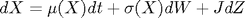 (see theory for details), cf2bondex recovers the extended expectation 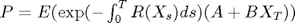 together with the parameters 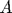 and 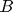.
[P A B alpha beta] = cf2bondex(A,B,tau,x0,K0,K1,H0,H1,R0,R1,L0,L1,JUMP,GRADJUMP)
Recovers the additional values 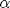 and 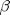, (see theory for details)
Input Arguments
tau is a (1 x T) vector of desired times to maturity. The other inputs must relate to x0 or be empty []. R0,R1 are scalars, K0, R1, L1 are of dimension (N x 1), H0, K1 are of dimension (N x N), H1 is a tensor (N x N x N). The number of jump components NJ has to be no greater than 1 in the current version. JUMP is the moment generating function of the jump distribution(s), expecting (NX)x(K) and returning (1)x(K). GRADJUMP returns the gradient of JUMP, expecting (NX)x(K) and returning (NX)x(K).
N is an optional argument that controls the number of time steps per year and thus the accuracy of the result. The default value is N=200.
Example 1: CDS pricing
The risk-neutral spread on a CSD contract is attained when equating the protection leg and the premium leg.
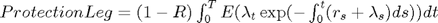
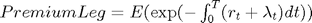
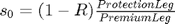
We can compute the protection leg via the extended transform, whereas the premium leg corresponds to the application of the simple bond pricing function.
Let us assume Vasicek interest rates and a CIR default intensity process 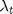 which itself may jump exponentially with constant intensity 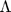:
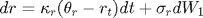
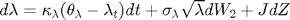
where 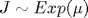 and 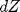 jumps with constant intensity .
r0 = 0.05; kappaR = 0.07; thetaR = 0.04; sigmaR = 0.05; lambda0 = 0.08; kappaL = 0.45; thetaL = 0.05; sigmaL = 0.20; Lambda = 0.10; muJ = 0.10; jump = @(c) 1./(1-c(2,:)*muJ); gradJump = @(c) [zeros(1,size(c,2));muJ./(1-c(2,:)*muJ).^2 ];
Translating these parameters into AJD coefficients:
x0 = [r0 ; lambda0]; K0 = [kappaR*thetaR kappaL*thetaL]'; K1 = [-kappaR 0 ; 0 -kappaL]; H0 = [sigmaR^2 0 ; 0 0]; H1 = zeros(2,2,2); H1(2,2,2) = sigmaL^2; R1 = [1 1]'; L0 = Lambda;
We assume a recovery rate of 40 %. Further, we want to approximate the integrals above for different maturties.
recovery = 0.4;
dt = 0.001;
tau1 = [0:dt:5];
protection = @(t) cf2bondex(0,[0;1],t,x0,K0,K1,H0,H1,[],R1,L0,[],jump,gradJump);
premium = @(t) cf2bond(t,x0,K0,K1,H0,H1,[],R1,L0,[],jump);
spread1 = (1-recovery)*cumsum(protection(tau1))./cumsum(premium(tau1));
plot(tau1,spread1);title('risk neutral CDS spread');
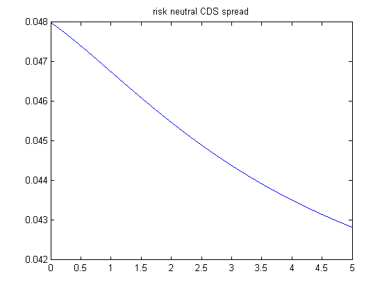 Let us compare the result with a better integration method:
tau2 = [0.25:0.55:5]; spread2 = (1-recovery)*arrayfun(@(t) quadgk(protection,0,t),tau2) ... ./arrayfun(@(t) quadgk(premium,0,t),tau2); plot(tau2,spread2,'r',tau1,spread1,'k'); title('risk neutral CDS spreads - approximation vs. quadgk'); legend('numerical integration','approximation');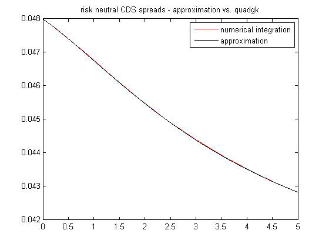